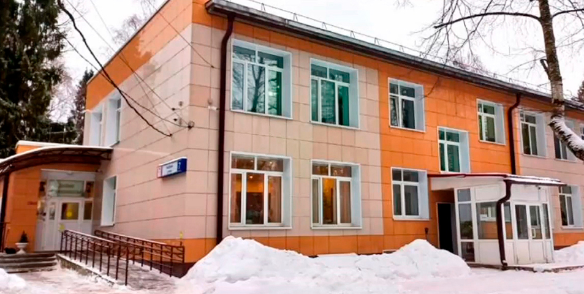

Семейный центр помощи семье и детям «Пушкинский»
Министерство Социального развития Московской области
наше руководство
Добрый день! Рада приветствовать Вас на официальном сайте Государственного казённого учреждения социального обслуживания Московской области Семейный центр помощи семье и детям «Пушкинский».
Деятельность нашего Семейного центра заключается в оказании социальных услуг детям-сиротам и детям, оставшимся без попечения родителей или находящимся в трудной жизненной ситуации, семьям с детьми, оказавшимся в социально опасном положении, гражданам, принявшим или желающим принять ребёнка на воспитание в свою семью, родителям, лишённым или ограниченным в родительским правах. Работа специалистов центра направлена на профилактику социального и вторичного сиротства, неблагополучия семей с детьми. Нам важно сохранить детей в биологических семьях и устроить детей-сирот и детей, оставшихся без попечения родителей, в любящие замещающие семьи, обеспечив их защиту и законные интересы. Центр осуществляет свою деятельность в стационарной и полустационарной формах, в форме социального обслуживания на дому, оказывая педагогическую, психологическую, юридическую и иную помощь нуждающимся.
С уважением, директор ГКУ СО МО Семейный центр помощи семье и детям «Пушкинский» Эмма Юрьевна Фотина, тел. +7(916)314-80-24